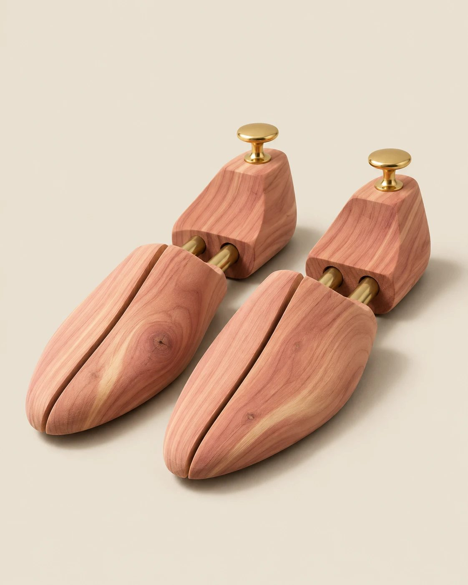

Crème nourrissante
Cire d'abeille, huile de lin, essence de térébenthine
Choisi par l'atelier
7 000 F

19 000 F francs CFA, prix indicatif
En route, arrivage sous 10 joursCèdre rouge non verni. Il absorbe l'humidité et garde la forme du soulier entre deux ports. Précisez votre pointure dans la note de commande.
SélectionNous ne l'avons pas fabriquée, nous l'avons choisie. Chaque paire est contrôlée à la réception, numérotée, et échangeable un an.
C'est l'accessoire qui prolonge le plus une paire, et celui qu'on achète en dernier. Sans embauchoir, la tige se creuse à l'endroit du pli et le cuir finit par se fendre là.
Un coup de brosse après chaque port, une crème nourrissante tous les deux mois, des embauchoirs entre deux sorties. C'est tout. Évitez de sécher un cuir mouillé près d'une source de chaleur : c'est la seule chose qui puisse vraiment l'abîmer.
Expédiée sous 72 h, puis livrée en 48 h à Cotonou et à Abidjan, sous 5 jours ailleurs au Bénin et en Côte d'Ivoire (jours ouvrés). Échange de pointure sous 7 jours, sans frais, sur toute pièce non portée à l'extérieur ; sur la sélection, échange pendant un an pour une pointure ou un défaut. Sur le sur-mesure : une retouche offerte après essayage, puis remboursement intégral si le chaussant ne convient toujours pas.
Cire d'abeille, huile de lin, essence de térébenthine